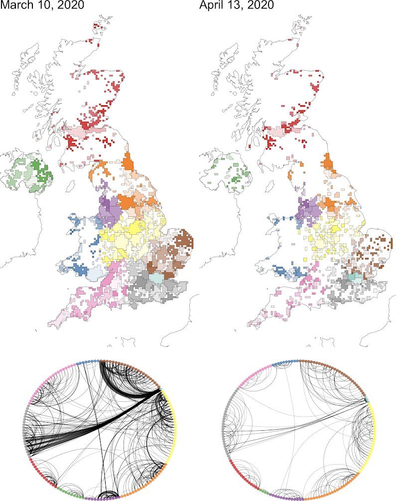

Welcome to Foundations of Python
Hamish Gibbs
Course aims
- A foundation in Python programming.
- Variables, data structures, control logic, functions, classes.
- An Introduction to popular Python tools for data science.
- pandas, matplotlib, sklearn.
- A hands-on data science challenge.
- Predicting the price of AirBnBs in London.
Also: tools of ‘professional’ Python
- Using an Integrated Development Environment
- VSCode
- Using collaboration tools
git, GitHub
Course format
- This is a short course!
- Days 1 – 3: lectures and practicals.
- Practical sessions rely on existing Python tutorials.
- Once you have worked through a practical, try to change the examples it provides until you “get it”.
- We are using a variety of open source Python learning resources.
- Day 4: Working together on a collaborative challenge.
Schedule
- Day 1: Python basics
- Variables, data structures (
list,dict), control logic (if,for,while).
- Variables, data structures (
- Day 2: Abstraction & composition
- Functions (
def), Classes (class). - Also: Using
.pyfiles, not.ipynbin VSCode.
- Functions (
Schedule
- Day 3: Python data science
pandas,numpy,matplotlib.- Also: Collaboration with
gitand GitHub.
- Day 4: Challenge: regression analysis
- Predicting the price of London AirBnBs using Inside AirBnB data.
About you
- Programming experience?
- Statistics experience?
- Any installation problems?
About me
- Final year PhD student
- Supervised by James Cheshire
- My research interests:
- Human mobility, disease transmission, bias & uncertainty
- Python experience:
- 9 years

Gibbs et. al., Detecting behavioural changes in human movement to inform the spatial scale of interventions against COVID-19, PLOS Computational Biology (2021)
Learning python

Source: Sarah’s Scribbles
Learning python
- Practice is the most important ingredient to becoming a good programmer.
- It is easier to “practice” if you find personally compelling reasons to use Python.
- Coursework, side projects, random curiosity, automating things in your life.
- Programming is all about trial and error.
AI
- New AI programming assistants:
- Chat GPT, GitHub Copilot, Copilot Chat.
- I recommend using them all, especially as a study aid.
- Bad idea: Using AI to generate code you can’t understand.
- Good idea: Using AI to explain code you can’t understand.
Any questions?
Basic data types
Tutorial #1: Variables
- Variables, expressions, and statements
- Core concepts:
Variable assignment and basic math
Working with strings
Subsetting strings
Tutorial #2: Lists
- An informal introduction to python §3.1.3
- Core concepts:
List indexing
List manipulation
List mutability
One more data structure: tuples
- A
tupleis an immutable collection of values.
- Unlike a
list, the values in atuplecannot be changed.- This means no
.append()or.sort()methods (which both change the values in alist).
- This means no
- Tuples are faster than lists and good when you have a collection of values that won’t have to change once it has been created.
Just one more data structure: set
A
setis an unordered collection with no duplicate elements.A
setis mutable (its values can be changed).It is very quick to check if an element is in a
set:- This doesn’t matter for a collection of 2 values, but matters a lot for larger collections.
Tutorial #3: Dictionaries
- Dictionaries §1
- To start, only work on the first section of this tutorial!
- If you “get it,” move on to this afternoon’s tutorials
- Core concepts:
The
{key: value}format of dictionariesThe
.items(),.keys(), and.values()methods
Using Python
-
- Clunky, ephemeral, hard to use for anything ‘real’.
-
- Google-hosted version of a Jupyter Notebook
- A very easy way to start!
-
- A “serious” integrated development environment.
- Good for larger projects, collaboration.
Setting up Colab
Does everyone have a Google account?
Go to colab.research.google.com.
Open a new notebook.
Rename your notebook.
Get started!